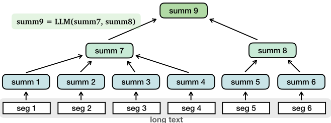
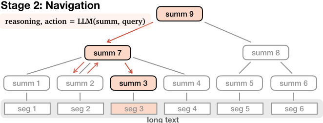
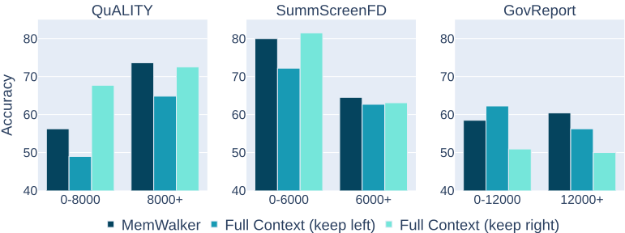
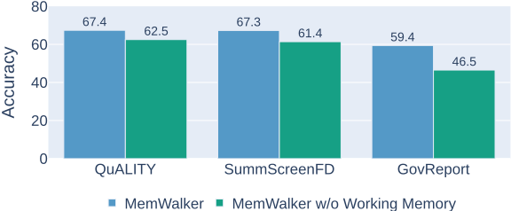
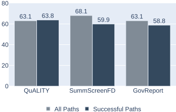
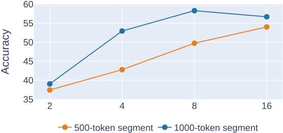

走出记忆迷宫：通过交互式阅读突破上下文限制（MEMWALKER）
LLM 的 self-attention 机制使上下文窗口存在固定上限，长文本问答中现有方案各有短板：扩展窗口仍有位置偏差、recurrence 丢失早期信息、检索对连贯长文本效果差。论文提出 MEMWALKER，把 LLM 当作交互式阅读 Agent：先离线将长文本分段并递归摘要构建记忆树（与 query 无关、可预计算），查询时 LLM 从根节点出发，通过 triage/leaf 两类 zero-shot 提示在树中导航，先推理再决定进入子节点或回退父节点，并携带 working memory，直到找到相关片段作答。在 QuALITY、SummScreenFD、GovReport 三个长文本 QA 任务上，该方法超越 recurrence、retrieval、截断基线以及 8K-16K 长上下文模型；working memory 带来 5-13% 准确率提升，平均只需阅读 63%-69% 的原文。核心结论是：只要底层 LLM 推理能力足够强（70B 级指令微调模型），无需任何微调即可用迭代提示实现对超长上下文的高效、可解释、可回错的阅读。
LLM 的 self-attention 机制导致上下文窗口固定且有限，长文本理解困难；位置编码外推、recurrence、检索等现有方法分别受限于窗口固定大小与位置偏差、早期信息丢失、对连贯长文本检索失效等问题。
MEMWALKER 将 LLM 视为交互式阅读 Agent，分两阶段：1) 记忆树构建——把长文本切分为适配上下文窗口的片段，用 LLM 逐段摘要为叶节点，再递归摘要为高层节点直至根节点，该过程与 query 无关、可预先计算；2) 导航——收到 query 后 LLM 从根节点出发，在非叶节点使用 triage prompt、在叶节点使用 leaf prompt，先生成自然语言推理再选择动作（进入某子节点、回退父节点、或在叶节点作答/回退），并在提示中携带沿途访问节点的 working memory；输出格式不合规则重新生成，连续三次失败返回 no answer。全程仅用 zero-shot prompting，无需微调。
在 QuALITY、SummScreenFD、GovReport 三个长文本 QA 任务上，MEMWALKER 大幅超越基于同一 Stable Beluga 2 的 recurrence、retrieval 与截断（keep left/right）基线，且在长序列子集（Long）上全面领先
超越可处理 8,000-16,000 token 的公开长上下文模型 LongChat 与 MPT
移除 working memory 导致所有任务准确率下降 5-13%
约 15%-20% 的样例执行了 revert 动作，其中 QuALITY 约 70%、SummScreenFD 约 60%、GovReport 约 80% 能从错误路径恢复并答对
平均只需阅读原文的 63%-69%（含树节点内容）即可作答，成功路径进一步降至 59%-64%
要求先生成推理理由对 Stable Beluga 2（70B）在所有任务上均有提升，但对较弱的 13B 模型反而降低准确率与有效动作比例
不同于扩展位置编码、修改注意力、recurrence 或检索等'一次性处理整个序列'的路线，本文把有限窗口的 LLM 当作交互式 Agent，通过迭代提示主动导航一棵离线构建的摘要记忆树来超越上下文限制；相比 WebGPT/WebShop 等交互搜索工作，面向连贯长文本设计；相比 PEARL，是真正超出上下文窗口的 memory-access 方法；相比已有的递归树状摘要工作（如书籍摘要），首次将树结构用于记忆导航。
相关度级别：high
命中能力域：3.1 上下文工程与记忆 | 3.2 提示工程 | 3.3 Agent 架构与工具使用
理由：直接命中 3.1 的核心技术：上下文窗口管理、长上下文策略、结构化上下文组织与记忆系统（记忆树 + working memory），且不涉及模型训练、纯靠提示与 Agent 化交互实现，与团队'把模型用好而非训练模型'的定位完全一致。同时其 triage/leaf 两类提示的格式约束设计、先推理后行动的导航循环、revert 错误恢复机制与 working memory 机制，对 3.2 提示工程和 3.3 单 Agent 执行可靠性（规划、反思、错误恢复）均有直接借鉴价值。
建议动作：深入精读并做内部分享
arXiv:2310.05029v1 [cs.CL] 2023年10月8日
Howard Chen∗，普林斯顿大学 Ramakanth Pasunuru，Meta AI
Jason Weston，Meta AI
Asli Celikyilmaz，Meta AI
大语言模型（Large Language Models, LLMs）之所以取得长足进步，得益于自注意力机制能够一次性处理并比较所有 token 的高效性。然而，这一机制存在一个根本性问题——预先设定的上下文窗口必然是有限的。尽管人们已尝试通过外推位置嵌入、使用循环机制或选择性检索长序列中的关键部分等方法来扩展上下文窗口，长文本理解仍然是一项挑战。我们提出了一种替代方法，将 LLM 视为交互式 Agent，使其能够通过迭代式提示自行决定如何阅读文本。我们介绍 MEMWALKER，该方法首先将长上下文处理为一棵由摘要节点构成的树。在接收到查询后，模型在这棵树中进行导航以搜索相关信息，并在收集到足够信息后作出回答。在长文本问答任务上，我们的方法优于使用长上下文窗口、循环机制和检索的基线方法。我们表明，除了实现高效阅读之外，MEMWALKER 还通过在交互式阅读文本的过程中突出显示推理步骤、精确定位与查询相关的文本片段，增强了可解释性。
大语言模型（LLMs）因模型规模的增大、预训练数据的扩充以及采用带自注意力机制的 Transformer 架构（Vaswani et al., 2017）而取得了显著进展。随着 LLM 能力的不断提升，用户越来越希望在推理过程中使用更长的输入序列。这导致在长文档中查询信息、分析法律或科学论文以及管理长对话等方面的需求日益增长。这些任务需要处理大量信息，凸显了更长上下文处理的重要性。
尽管发展迅速，自注意力机制的局限性已日益显现：其内存占用随序列变长而增加，从而限制了上下文窗口的大小。为解决这一问题，人们采用了多种不同的方法，例如设计更轻量、更高效的注意力方案（Zaheer et al., 2020），使用外推或内插位置嵌入进行微调（Press et al., 2022; Chen et al., 2023），引入循环机制以将前文片段的信息传递到后续片段（Rae et al., 2019; Fan et al., 2020; Xu et al., 2022），或检索文本的相关部分（Lewis et al., 2020; Izacard & Grave, 2020）。然而，这些方法在设计上仍存在局限。上下文窗口无论扩展到多长，其大小都是固定的，且窗口内并非所有位置都具有同等的重要性（Liu et al., 2023）。虽然循环机制可以处理无限长度的序列，但它往往无法保留较早片段的信息。此外，从连贯的长文本中检索片段可能效果不佳，因为许多检索系统是为区分相似但不同的文档而定制的（Chen et al., 2017）。
为了解决这些问题，我们开发了一种根本不同的方法：将具有有限上下文窗口的模型视为一个交互式智能体（agent），而不是简单地一次性处理整个序列。为此，我们提出了 MEMWALKER，这种方法使模型能够通过迭代式大语言模型（LLM）提示以交互方式阅读长文本。MEMWALKER 通过一种两阶段 图 1：MEMWALKER 的两阶段流程。上方（阶段 1）：构建记忆树。长文本被切分为预定大小的片段，每个片段首先被摘要为一个摘要节点。这些摘要节点再被递归地摘要为更高层级的节点，直至到达根节点。下方（阶段 2）：给定一个查询，LLM 通过迭代提示在树结构中进行导航，找到包含相关片段的节点以形成答案。在每个节点处，LLM 通过从分布 LLM ( reasoning, action | summ,query ) 中采样，首先对子摘要节点进行推理，从而决定动作。如果 LLM 选择了错误的路径，或者当前片段与查询无关，它可以选择 revert 动作返回父节点（红色虚线箭头）。有关实现导航的 LLM 提示的详细示例，请参见表 1。
* 本工作完成于作者在 Meta AI 实习期间。
1


方法来运行：1）记忆树构建和 2）导航。在第一阶段，长文本被切分为能够放入 LLM 上下文窗口的小块。随后，LLM 将每个片段摘要为一个文本形式的摘要节点。这些摘要节点又被逐步进一步摘要为更高层级的摘要节点，从而构建出一棵树结构（图 1）。为了回答用户查询，LLM 从树的根节点开始导航。它遍历这棵树，检查文本的各个部分，以识别与回答查询相关的路径和片段。因此，MEMWALKER 能够突破上下文限制，高效地处理文本并定位长文本中的重要片段，而无需额外的微调。
我们在三个长上下文问答任务上对 MEMWALKER 进行了评估，结果表明其性能优于循环机制、检索以及原始 LLM 基线方法。MEMWALKER 还优于其他可处理 8,000 至 16,000 个 token 的开放长上下文系统。我们对 MEMWALKER 的有效性进行了分析，结果表明它能够对导航决策进行推理、在遍历过程中融入工作记忆，并从早期导航步骤中所犯的错误中恢复。
上下文窗口扩展。实现更长上下文序列的一种直接方法是对预训练语言模型进行调优，并在更长的文本序列上对其位置嵌入进行外推（Press et al., 2022; Chen et al., 2023）。另一个方向是改进的自注意力机制（Beltagy et al., 2020; Zaheer et al., 2020; Guo et al., 2022; Ainslie et al., 2023）。得益于 Flash Attention（Dao et al., 2022）等能大幅降低内存占用的训练技术，这一方法取得了长足进展。尽管近期进展显著，该方法仍存在两个固有的局限性：1）要使模型能够处理更长的序列，需要对模型进行微调，这会带来不可忽视的成本；2）当序列长度变得非常长时，注意力机制可能因位置偏差而效果下降（Liu et al., 2023）。
循环机制。为解决长序列问题，循环架构已被广泛研究，从基于循环神经网络的模型 Hochreiter & Schmidhuber (1997); Miller et al. (2016) 到现代基于 Transformer 的模型（Dai et al., 2019; Rae et al., 2019; Fan et al., 2020; Xu et al., 2022; Bulatov et al., 2023; Chevalier et al., 2023）。然而，每一个循环步骤都会造成信息损失，且训练目标并未针对下游任务指导“如何压缩”。通常而言，这种压缩意味着对较早序列信息的回忆能力弱于对较新信息的回忆能力。
检索。检索系统通常用于从大规模文档池中选取相关文档，并已通过多种方式被融入神经模型（Chen et al., 2017; Dinan et al., 2018; Lewis et al., 2020）。对于长序列阅读，基于检索的方法通常先将文本片段嵌入为向量表示，再基于查询进行检索，而不是将整个序列输入模型，例如 Fusion-in-Decoder Izacard & Grave (2020)，或是关注外部记忆的 kNN 变体，如 Memorizing Transformers（Wu et al., 2022）。
推理 Agent。模型可以不将长文本视为单一的整体输入，而是作为一个 Agent 来行动，读取文本的一部分并采取灵活的动作。诸如 WebGPT (Nakano et al., 2021) 和 WebShop (Yao et al., 2022) 之类的工作允许模型在互联网上滚动浏览，并搜索所请求的答案或物品。尽管它们的原子动作支持以交互方式搜索相关内容，但这些模型并非为理解长而连贯的文本而设计。另一方面，PEARL (Sun et al., 2023) 则提示模型生成伪 API 供其调用，以便聚焦于长文本中正确的部分。然而，该方法是在 LLM 的上下文窗口内运行的，而非一种能够突破上下文限制的记忆访问方法。其他一些工作则利用迭代式提示来对长文本生成任务进行推理和规划，例如 Re3 (Yang et al., 2022) 和 RecurrentGPT (Zhou et al., 2023)。Self-Notes (Lanchantin et al., 2023) 将自生成的笔记与输入数据交错穿插，以实现更好的推理。在当前的 LLM 出现之前，LSTM 也曾被应用于在文档结构（标题、小节）中进行搜索 Geva &Berant (2018)。递归树结构也曾在长文本（例如书籍）摘要的场景下被探索过 (Wu et al., 2021)，但该工作并未将其用于记忆导航。
我们研究与长上下文问答相关的任务——给定长文本 x 和查询 q，模型的目标是生成回复 r。
MEMWALKER 包含两个步骤：1) 记忆树构建（memory tree construction），将长上下文分解为树形数据结构。该构建过程不依赖于查询，因此若序列数据事先可得，便可预先计算。2) 导航（navigation），模型在接收到查询后在该结构中进行导航，收集信息以构建合适的回复。MEMWALKER 假设能够使用一个底层 LLM，构建与导航均通过迭代式 LLM 提示来实现。
记忆树构建。MEMWALKER 首先从长文本 x 创建树形数据结构 T ( x )。每个节点由一段文本表示，该文本概括了其下方所有子节点的摘要。具体而言，长文本 x 被划分为若干片段（c 1 , . . . , c n）。随后，LLM 将每个片段总结为第一层的摘要，表示为 s l =1 i = LLM ( c ≤ i ) , i = 1 ..n。初始摘要节点随后被进一步总结为更高层的节点 s l +1 j = LLM ( s l i , . . . , s l i + M t )，其中 M t 表示第 l 层中第 t 个分组的节点数量。该过程持续进行，直至生成最顶层的根节点 s L。完整的树生成过程如图 1 所示。总结通过 LLM 提示来完成。我们在附录 A.1 中给出了记忆树构建的提示词。
3
表 1：来自 QuALITY 数据集的示例轨迹。LLM 首先在根节点（图 1 中的 summ 9）处看到子节点的内容，并生成回复（采取动作 0 进入 summ 7）。当到达叶节点（summ 2）时，LLM 判定信息不足，因此采取回退动作（动作 -1）返回父节点。在节点之间来回跳转之后，LLM 最终确定一个叶节点（summ 3）并回答问题。黄色表示 §3 中描述的分诊提示（triage prompt），紫色表示叶节点提示（leaf prompt）。// 之后的文本表示不会被 LLM 处理的注释。
| Navigation Trajectory | Navigation Trajectory |
|---|---|
| summ 9 Response | The following passage(s) are the summaries of the different parts of a story. To answer the question: Why did Ro change his mind about the people on Mars being backwards? Which of the following summary is MOST LIKELY to contain information about the answer? First provide reasoning to compare the summaries before you make the decision. Summary 0: The story is set on Mars and follows the adventures of Ro, [...] // summ 7 Summary 1: Ro, a young Martian, is climbing down a cliff to rescue [...] // summ 8 Relpy with the passage number as your action. You MUST choose one summary number and you should reply with the following format: ################################### Reasoning: ... Action: 0 / 1 / 2, ... ################################### Reasoning: Summary 0 is most likely to contain information about why Ro changed his mind about the |
| LLM enters summ 7 then enters summ 2 | LLM enters summ 7 then enters summ 2 |
| summ 2 | people on Mars being backwards, as it mentions Ro's interactions with the people from Earth and their advanced method of communication. Action: 0 Read the text in triple quotes and answer a question: Story background information: Ro, a young Martian who has returned from his travels to find his home overrun by the Oan, a tribe of rat-like creatures. [...] // [WORKING MEMORY] carried from summ 7 Main text: In his left hand and under his armpit Ro carried stones. They were of a good weight and would make short work of any Oan who was foolish enough to cross his path. [...] // seg 2 Why did Ro change his mind about the people on Mars being backwards? (A) He realized that despite human's technological advancements, they have over-complicated marriage. (B) He realized that while the humans are physically vulnerable without their weapons, the red people have formidable strength in their arms. (C) He realized that human males suppress public affection when they are intimidated by other males, whereas male Martians don't hide their affection. (D) He realized that male humans were petty and even brute when it came to rivalry over women, whereas male Martians were much more civilized. If the answer CANNOT be inferred from the text above, reply with action -1. If the answer CAN be inferred from the text above, reply with action -2, and also provide your reasoning, and the final answer. You are ONLY allowed to reply with action -2 or -1. Your should reply with the following format: |
| backwards. Therefore, the answer cannot be inferred from the text. Action: -1 | backwards. Therefore, the answer cannot be inferred from the text. Action: -1 |
| Response | ################################### Reasoning: ... Action: -2 or -1 Answer: (A) ... ################################### Reasoning: The text does not explicitly mention Ro changing his mind about the people on Mars being |
| LLM reverts to summ 7 then enters summ 3 | LLM reverts to summ 7 then enters summ 3 |
| summ 3 | [...] Main text: 'Last night I thought that we on Mars are backward. Now I'm not so sure.' [...] // seg 3 Reasoning: Ro initially sees Earth's customs as backward compared to Mars, However, after discussing [...] Action: -2 Answer: (A) |
| Response |
| Navigation Trajectory | Navigation Trajectory |
导航。语言模型在接收到查询 q 后，从根节点 s L 出发对该树进行导航以生成回复 r。在 LLM 所遍历的节点 s l 处，它观察下一层各节点的摘要 { s l - 1 i , . . . , s l - 1 i + M t }。LLM 在 | M t | +1 个动作中进行决策
-选择其中一个子节点以进一步查看，或回退到父节点。在叶节点 s l =1 i 处，大语言模型（LLM）可以决定两种动作之一：提交该叶节点并回答查询，或者当叶节点中的信息（即 c i ）不足时回退到父节点（ s l +1 j ）。为了做出导航决策，我们还可以要求 LLM（通过提示）先生成一段自然语言的理由来论证该动作，然后再给出动作选择本身。具体而言，在每个节点处，模型生成响应 r ∼ LLM ( r | s, q )，其中响应为以下两种元组之一：1）当 LLM 位于叶节点时，r = ( reasoning, action, answer )；或 2）当 LLM 位于非叶节点时，r = ( reasoning, action )。
导航提示设计。我们通过零样本提示（zero-shot prompting）实现 LLM 导航。我们的方法需要两类提示：1）分诊提示（triage prompt）和 2）叶提示（leaf prompt）（在表 1 中高亮显示）。分诊提示包含查询、子节点的摘要，以及供 LLM 遵循的指令。分诊提示用于非叶节点。叶提示包含片段的内容、查询（及选项），以及要求 LLM 生成答案或回退到父节点的指令。分诊提示和叶提示都规定了 LLM 需要遵循的输出格式。若不符合该格式，则会导致无效动作，并要求 LLM 重新生成。如果 LLM 连续三次未能生成可解析的输出，导航将终止并返回 'no answer'。
工作记忆。当 LLM 遍历树时，它可以在整个导航轨迹中保留信息并将其添加到上下文中。形式化地，LLM 生成响应 r ∼ LLM ( r | s, q, m )，其中额外的工作记忆 m ∈ { Ø } ∪ { ( s i , s i +1 , . . . ) } 要么为空，要么由先前访问过的节点的内容组成。我们对工作记忆进行截断，使其能够放入 LLM 的上下文窗口。* 表 1 展示了通过提示中的 [WORKING MEMORY] 添加工作记忆的方式。
我们使用三个数据集：来自 SCROLLS 基准测试（benchmark）(Shaham et al., 2022) 的 QuALITY、SummScreenFD 和 GovReport。我们对所有数据集均报告准确率。
QuALITY。QuALITY 是由 Pang et al. (2022) 收集的多项选择问答数据集。该数据集包含源自 Project Gutenberg 的长篇故事以及由人工标注者标注的问题。我们在实验中使用了一个包含 187 个样本的子集。
SummScreenFD。SummScreenFD (Chen et al., 2022) 是一个以演员之间对话形式呈现的电视剧和电影剧本数据集，最初为摘要任务而设计。我们将该数据集改造为问答任务：使用 Stable Beluga 2 根据原始提供的标准答案（ground truth）摘要文本生成一个"who"（谁）问题，随后由人类专家对答案进行检查。该问题与原始长文本配对后，构成了包含 306 个样本的改造后 QA 任务。
GovReport。GovReport 数据集汇集了来自美国国会研究服务处（Congressional Research Service）和美国政府问责局（U.S. Government Accountability Office）的文档，以及由专家提供的摘要 (Huang et al., 2021)。我们采用与 SummScreenFD 相同的方式，将该数据集改造为包含 101 个样本的问答数据集。
这三个数据集中每个样本都具有长度各异的长上下文——有些样本较短，有些序列较长。因此，我们既在原始数据集上报告结果，也在每个任务中仅包含较长序列的子集上报告结果，以便在更困难、上下文更长的情况下更好地评估记忆访问。阈值分别为：QuALITY 高于 8,000 个 token，SummScreenFD 高于 6,000 个 token，GovReport 高于 12,000 个 token。
* 随着工作记忆不断累积而对其进一步进行摘要是一种替代方法，但我们在本研究中尚未对此进行探索。
5
| QuALITY Orig. / Long | SummScreenFD Orig. / Long | GovReport Orig. / Long | |
|---|---|---|---|
| MPT 13B (8k) | 44.4 / 47.3 | 65.0 / 63.5 | 44.6 / 43.8 |
| LongChat 13B (16k) | 43.3 / 48.4 | 62.4 / 61.1 | 54.5 / 52.1 |
| Recurrence | 51.3 / 56.0 | 47.7 / 45.4 | 35.6 / 33.8 |
| Retrieval | 63.1 / 64.8 | 63.7 / 62.2 | 54.0 / 52.1 |
| Full Context (keep left) | 56.7 / 64.8 | 62.7 / 62.7 | 59.4 / 56.3 |
| Full Context (keep right) | 70.1 / 72.5 | 64.7 / 63.1 | 50.5 / 50.0 |
| MEMWALKER | 67.4 / 73.6 | 67.3 / 64.5 | 59.4 / 60.4 |
| | QuALITY Orig. / Long | SummScreenFD Orig. / Long | GovReport Orig. / Long |
我们在大多数实验中使用 Stable Beluga 2（Mahan et al.）作为基础大语言模型（LLM），正如我们将展示的，与其他几种 LLM 变体相比，它提供了最先进的性能。Stable Beluga 2 是在 70B LLaMA-2（Touvron et al., 2023）之上构建的指令微调模型，其微调与我们的评估任务没有重叠。它的最大上下文长度为 4,096 个 token。我们以零样本（zero-shot）提示的方式使用该模型，既没有针对我们的任务进行进一步的微调，也没有使用上下文内少样本（few-shot）示例。在记忆树构建以及生成用于导航的动作和推理时，我们都使用 top-p 采样。对于 QuALITY、SummScreenFD 和 GovReport，我们分别将最大节点数设为 max_t M_t = 8, 5, 8，分段大小设为 |c| = 1000, 1000, 1200。
我们与三种基线记忆技术进行比较，它们均基于相同的底层大语言模型（LLM）——Stable Beluga 2：1）完整上下文窗口，2）递归，3）检索。完整上下文窗口基线利用全部 4,096 个 token 来处理长输入文本和生成。由于数据集中的实例常常超出上下文限制，我们将文本截断至右侧（最近的部分）或左侧（最久远的部分）作为输入，并对两种方式都进行评估。对于检索，我们使用 Contriever（Izacard et al., 2022）根据查询从长上下文中选择分段。得分最高的分段被拼接起来作为 LLM 的输入上下文，直至填满整个上下文。最后，我们实现了一种通过摘要将信息从之前的分段 token 递归传递到当前分段的基线（Xu et al., 2022），其中每个分段为 2,500 个 token，摘要的最大大小为 500 个 token。
主要结果。表 2 展示了 MEMWALKER 与其他基线方法之间的比较。MEMWALKER 在所有任务上都以较大幅度超越了递归基线。这表明了递归方法的局限性，即与查询相关的信息在若干步骤之后便会丢失。当分段来自连贯的长篇故事而非相互独立的文档时，MEMWALKER 也优于检索方法。在这些任务上，完整上下文基线在"Original"任务设定下可以表现良好，该设定可能包含相对较短的序列，不过为了获得最佳性能而选择左截断还是右截断似乎取决于具体数据集。尽管如此，在 Original 设定下，MEMWALKER 相对于完整上下文基线仍取得了更高的性能，仅有 QuALITY 上的 keep right 变体和 GovReport 上的 keep left 变体例外，这可能是由于数据集中存在位置偏差，即相关分段往往出现在文本的开头或结尾。然而，在所有三个任务的 Long 版本上，MEMWALKER 均超越了所有基线，也就是说，当记忆访问变得更加关键时，它展现出了强大的性能。MEMWALKER 还优于其他公开可用的模型，包括 LongChat (Li et al., 2023) 和 MPT (MosaicML, 2023)。
6
| QuALITY Acc. / Valid Action (%) | SummScreenFD Acc. / Valid Action (%) | GovReport Acc. / Valid Action (%) | |
|---|---|---|---|
| LLaMA 2 Chat (13B) w/o reasoning | 39.6 / 73.2 48.1 / 97.4 | 20.9 / 75.5 25.8 / 95.8 | 15.8 / 69.0 21.8 / 93.1 |
| LLaMA 2 Chat (70B) w/o reasoning | 52.0 / 86.1 59.9 / 100.0 | 55.6 / 99.5 58.5 / 100.0 | 41.6 / 97.8 42.6 / 100.0 |
| Stable Beluga 2 (70B) w/o reasoning | 67.4 / 92.5 66.8 / 100.0 | 67.3 / 95.1 64.1 / 90.5 | 59.4 / 97.0 |
| 52.5 / | |||
| 98.2 |
| | QuALITY Acc. / Valid Action (%) | SummScreenFD Acc. / Valid Action (%) | GovReport Acc. / Valid Action (%) |

MEMWALKER 提升了长序列上的性能。我们在图 2 中给出了每个任务按输入序列长度划分的性能细分。当文本长度较短时，MEMWALKER 相对于完整上下文（左截断或右截断）基线并无优势，但对于更长的序列，它在所有任务上都优于这两种截断方式。交互式阅读的收益在文本长度足够大之后才会显现，也就是说，一旦序列长度充分大于 LLM 的上下文长度 4,096，便会展现出更好的性能。
推理能力对记忆树导航至关重要。MEMWALKER 的有效性高度依赖于底层大语言模型（LLM）的推理能力。对于每个导航决策，我们使用一个 LLM 提示，要求 LLM 首先用自然语言生成一个理由，以证明其随后预测的动作是合理的，见表 1。我们在表 3 中展示了推理对性能的影响：通过从提示中删除"First provide reasoning . . . before you make your decision"这一行，对比 Llama 2 Chat（13B 和 70B 参数变体）与 Stable Beluga 2（70B）在有推理依据和无推理依据情况下的表现。对于更小、能力更弱的模型（13B），由于其无法遵循指令，性能大幅落后于 70B 模型。事实上，要求较弱的模型给出推理依据反而会降低性能，这大概是因为它们无法生成并利用此类理由。在相同 LLM 规模下，Stable Beluga 2 的表现优于 Llama 2 Chat，并且展现出更强的推理能力。对于 Stable Beluga 2，要求给出推理依据在所有任务上都能提升性能。这凸显了 MEMWALKER 的主要特点：如果 LLM 越过了某个关键的推理能力阈值，它就能在多轮中对长输入进行推理，而不会使错误在轮次之间迅速级联。对于无法做出良好导航决策的较弱 LLM，错误可能会不断累积，导致整体性能受损。由于 LLM 的推理能力在未来几年只会不断提升，我们预期像 MEMWALKER 这样的方法将变得越来越有效。

| Stray Ratio | Recovery Rate | |
|---|---|---|
| QuALITY | 15 | 70 |
| SummScreenFD | 18.6 | 59.6 |
| GovReport | 18.8 | 79 |
| | Stray Ratio | Recovery Rate |

记忆树导航需要工作记忆。当 MEMWALKER 做出遍历记忆树并读取相关分段的决策时，它可能会失去对整体上下文的把握。因此，模型将导航路径上各节点的信息作为工作记忆进行携带，工作记忆的内容随模型选择下一条路径而更新。我们评估了 MEMWALKER 在有工作记忆和无工作记忆情况下的性能，结果见图 3。我们发现，在没有工作记忆的情况下，所有任务都出现显著的性能下降，准确率下降 5-13%，这表明了该组件的重要性。
MEMWALKER 能够从偏离路径中恢复。当 MEMWALKER 在记忆树中导航时，它不仅需要找到通往最相关分段的路径，还需要在出现遍历错误时有可能从中恢复。我们在表 4 中报告了恢复统计信息。MEMWALKER 会对大约 15% - 20% 的样本执行回退（revert）导航动作（从而改变路径），但在这些样本中，它能够恢复并做对这些样本的比例在 QuALITY 上为 70%，在 SummScreenFD 上为 ∼ 60%，在 GovReport 上为 ∼ 80%。
MEMWALKER 实现了高效阅读。由于 MEMWALKER 会自行确定需要阅读长文本的哪些部分，因此需要阅读的有效内容可能小于整个序列。我们在图 4 中报告了三个任务各自在所有样例上平均的长上下文阅读百分比。我们发现，平均只需阅读 63%-69% 的文本即可回答问题，其中包括树节点的内容。在成功的路径中，所需阅读量进一步降低至 59%-64%。

记忆树构建的权衡。在构建记忆树时会产生一个基本的权衡——对较大的分段进行摘要可以将更多信息压缩到一个节点中，从而降低树的深度，但存在损失内容保真度的风险。类似地，将许多较低层级的节点连接到上层节点有助于使树更加扁平，但会使 LLM 在每个节点处的导航任务变得更加困难。图 5 展示了记忆树不同配置在 QuALITY 上的性能。对较大分段进行摘要通常比使用较小分段以及将更多子节点连接到父节点更为有利。然而，随着最大节点数的增加，性能趋于平稳，这体现了记忆树构建过程中在节点可承载信息量方面的权衡。
我们提出了 MEMWALKER——一个交互式阅读智能体（agent），它利用迭代式 LLM 提示，基于自身推理来决定应当仔细阅读内容的哪一部分。我们的方法首先根据长上下文序列数据构建结构化记忆，然后在给定查询的情况下，对需要阅读的相关部分做出导航决策。我们的方法在多项基线（包括各种长上下文长度模型、检索基线和循环基线）上展现出优越的性能，尤其是在较长序列的任务上。详细分析突出了若干重要因素，包括我们方法对导航决策进行推理的能力、在必要时将导航回退到另一条路径的能力，以及对工作记忆的引入。未来的工作应探索 MEMWALKER 所开辟的诸多新方向，特别是将其应用于树以外的其他数据结构，以及针对交互式阅读目标对其性能进行微调。
MEMWALKER 存在三个主要局限性。首先，当序列长度变得极长时，记忆树的生成可能无法很好地扩展。序列长度的增加意味着树中需要更多的节点，从而使树的构建过程变得繁重。诸如以牺牲摘要的粒度来换取速度之类的变通方法或许是可行的。尽管如此，扩展性问题仍然是一个限制。在这种情况下，将 MEMWALKER 推广为树与哈希 Bawa et al. (2005) 的组合或其他替代数据结构，同时通过 LLM 提示保留其遍历能力，可能是合理的。其次，MEMWALKER 只有在 LLM 具备足够强的推理能力时才能工作，根据我们的实验，这要求模型规模足够大（超过 70B）且经过指令微调。如果推理能力不足，误差会不断累积，该方法将会失败。让一个更小的模型也能执行类似的指令遵循流程，将有助于该方法的扩展。而这可以通过消除下述第三个局限性来实现。第三，MEMWALKER 仅使用零样本提示，并未利用微调来进一步提升交互式阅读能力。例如，可以通过执行交互式阅读并收集成功的路径，以供进一步微调来实现这一点。
我们提供了§3中所述的记忆树构建与导航的完整提示词。
我们使用两个提示词来构建记忆树（即表5中的构建组件）。第一个（叶子节点）提示词指示大语言模型（LLM）将文本片段总结为一份全面的摘要。在此步骤之后，各片段被分组并总结为非叶子节点摘要。这些摘要（[CHILD SUMM NODE 0]、[CHILD SUMM NODE 1]、…、[CHILD SUMM NODE N]）被分组并拼接起来，作为其父节点的摘要内容。在此过程中，如果拼接后的摘要超过预定长度，则使用第二个构建提示词对文本（即 [SUMMARIES]）进行进一步总结，以生成父节点的摘要。
我们使用两个导航提示词（triage 和 leaf），如 §3 所述。我们在表 5 中展示了导航阶段的通用提示词模板。
我们在表 6 中提供了一个额外的导航示例。
13
| Stage | Prompt |
|---|---|
| Construction (leaf) | [TEXT OF SEGMNET] . Summarize the above text comprehensively into a fluent passage. |
| Construction (non-leaf) | [SUMMARIES] . Compress each summary into a much shorter summary. |
| Navigation (triage) | The following passage(s) are the summaries of the different parts of a story. To answer the question: [QUERY] Which of the following summary is MOST LIKELY to contain information about the answer? First provide reasoning to compare the summaries before you make the decision. Summary 0: [CHILD SUMM NODE 0] Summary 1: [CHILD SUMM NODE 1] . . . Summary N: [CHILD SUMM NODE N] Relpy with the passage number as your action. You MUST choose one summary number and you should reply with the following format: ################################### Reasoning: ... Action: 0 / 1 / 2, ... ################################### |
| Navigation (leaf) | Read the text in triple quotes and answer a question: Story background information: [WORKING MEMORY] Main text: [TEXT OF SEGMNET] [QUERY] [OPTIONS] If the answer CAN be inferred from the text above, reply with action -2, and also provide your rea- soning, and the final answer. You are ONLY allowed to reply with action -2 or -1. Your should reply with the following format: ################################### Reasoning: ... Action: -2 or -1 Answer: ... ################################### |
| Stage | Prompt |
14
| Navigation Trajectory | Navigation Trajectory |
|---|---|
| Node 1 | The following passage(s) are the summaries of the different parts of a story. To answer the question: Who invited Michael to his business school as a guest speaker? Which of the following summary is MOST LIKELY to contain information about the answer? First provide reasoning to compare the summaries before you make the decision. Summary 0: In the text, Michael and Ryan are on their way to give a speech at a business school. [...] Summary 1: Michael is reminiscing about his college days and suggests playing Frisbee with a college student. [...] Summary 2: Michael Scott is giving a presentation to a group of business students, attempting to explain [...] Summary 3: In the text, there is a scene where a bat is found in the office and employees react differently to its presence. [...] Summary 4: Pam, an artist, has an art show featuring her paintings. Roy compliments her art [...] Relpy with the passage number as your action. You MUST choose one summary number and you should reply with the following format: ################################### Reasoning: ... Action: 0 / 1 / 2, ... |
| Response | ################################### Reasoning: Summary 2 provides more information about Michael giving a presentation to business stu- dents, making it more relevant to the question about who invited Michael to his business school as a guest speaker. Action: 2 |
| Node 2 | Read the text in triple quotes and answer a question: Story background information: Michael and Ryan are on their way to give a speech at a business school. Kevin joins them after experiencing a tire blowout on his way there. Michael is excited about [...] Main text: [SCENE BREAK] Michael: So, you wanna start a business. How do you start? What do you need? Well, first of all, you need a building. And secondly, you need supply. You need something to sell. Now this could be anything. It could be... a... thingamajig. Or a... a whosi-whatsi. Or... a Whatchamacallit . Now, you need to sell those in order to have a PayDay . And, if you sell enough of them, you will make a 100 Grand . Satisfied? [SCENE BREAK] Toby: Oh, this looks great. I'd, I'd love to be there, but my daughter's play is tonight. ... Damnit! You know, one of the other parents will probably videotape it. [...] Question: 'Who invited Michael to his business school as a guest speaker?' If the answer CANNOT be inferred from the text above, reply with action -1. If the answer CAN be inferred from the text above, reply with action -2, and also provide your reasoning, and the final answer. You are ONLY allowed to reply with action -2 or -1. Your should reply with the following format: ################################### Reasoning: ... Action: -2 or -1 |
| Response | Answer: (A) ... ################################### Reasoning: The text does not explicitly mention who invited Michael to the business school as a guest speaker. Action: -1 |
| Node 1 Response | [...] // Retracted to the first node. Reasoning: Summary 0 contains information about Michael, Ryan, and Kevin going to give a speech at a business school. This summary is the most relevant to the question about who invited Michael to the business school as a guest speaker. Action: 0 |
| Node 3 | [...] Main text: [...] Michael: Pop quiz. Kevin: ...What? Michael: Why is today a special day? Kevin: I almost died. Michael: Today's a special day, because I am being honored as a... visiting... professor, special lecturer, emeritus... how did you, how did you... Ryan: You will be a guest speaker... in my Emerging Enterprises class. Michael: In business school, Kevin. Business school. [...] |
| Response | Reasoning: Ryan mentioned that Michael would be a guest speaker in his Emerging Enterprises class. Action: -2 Answer: Ryan |
| Navigation Trajectory | Navigation Trajectory |
15